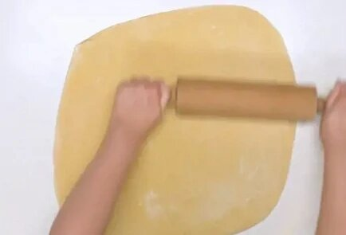

| Шаг 1 | Дрожжи развести в теплом молоке (плюс добавляем чуточку сахара (из начальных 100 граммов добавить). Пока дрожжи поднимаются, в отдельной миске взбить яйца. |
|
| Шаг 2 | К яйцам добавить размягченное масло (1/3 от пачки). | |
| Шаг 3 | В яично-масляную смесь добавить сахар (оставшийся из начальных 100 граммов). | |
| Шаг 4 | Смешать разведенные в молоке дрожжи со смесью из яйца, масла и сахара, тщательно перемешать в посуде, где в дальнейшем будет замешиваться тесто. |
 |
| Шаг 5 | Муку (600–700 граммов (сколько тесто возьмет, на самом деле)) соединить с солью. | |
| Шаг 6 | Часть смеси (муки с солью) всыпать в дрожжевое тесто и вымесить его. Сделать клейковину (чайная ложка муки + чайная ложка воды смешать, слепить шарик и промыть холодной водой). Выложить получившийся шарик в тесто, перемешать. |
 |
| Шаг 7 | После добавления клейковины добавить оставшуюся смесь из муки и соли, вымесить тесто. Накрыть получившийся шарик полотенцем и постаивить в теплое место на час. |
|
| Шаг 8 | В это время подготовить начинку. В микроволновой печи размягчить масло (секунд 7–10). Соединяем корицу и тростниковый сахар. |
|
| Шаг 9 | Приступить к «сборке». Необходимо раскатать полученное тесто, которое уже должно было увеличиться вдвое, в тонкий большой пласт, желательно прямоугольный (примерно 40 см на 55 см). |
 |
| Шаг 10 | Растопленное масло намазать на пласт. Посыпать пласт смесью корицы и тростникового сахара. Скатать пласт в тугой рулет (чем туже, тем лучше). |
|
| Шаг 11 | Разрезать рулет на кругляши — синнабоны. Резать можно ножом или ниткой (ниткой лучше). Получившиеся синнабоны уложить в форму для выпекания, застеленную пекарской бумагой и смазанную сливочным маслом. Постаивить в духовку на 20–30 минут при 175 градусах (пока не станут золотистого цвета; затем еще сверху их чуть подпекти, чтобы сахар растворился). |
|
| Шаг 12 | После того, как булочки подрумянились и готовы, вынуть их из духовки и сразу покрыть сливочной смесью (можно смазать кисточкой, а можно и залить). В конце можно украсить по желанию тертым шоколадом или орешками. Но оригинальный вкус ни с чем не сравнить. |